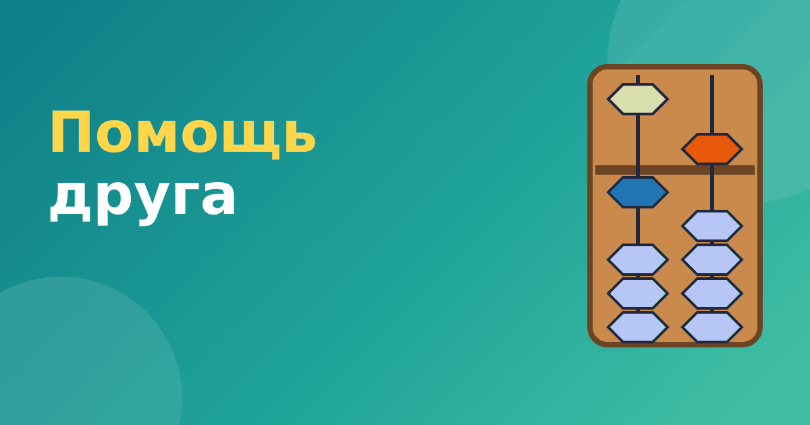

Помощь друга на абакусе: как переходить через десяток

Если «помощь брата» работает внутри одного стержня и связана с числом 5, то «помощь друга» связана с числом 10 и затрагивает соседние стержни. Это приём для случаев, когда при сложении получается десяток или больше, а при вычитании приходится занимать. Для детей он выглядит сложнее, но логика остаётся понятной, если идти по шагам. Разберём помощь друга на абакусе на примерах.
Кто такой «друг»
Друг числа — это число, которое вместе с ним даёт 10. Друг 1 — это 9, друг 2 — 8, друг 3 — 7, друг 4 — 6, друг 5 — 5. Именно эти пары часто называют «друзьями десяти». Если ребёнок хорошо знает состав числа 10, ему проще понять приём. Потренировать эти пары можно по статье состав числа до 10.
Складываем с помощью друга
Пример: 8 + 7. На стержне единиц цифра 8, нужно прибавить 7. Если просто прибавить, получится 15, а на одном стержне цифры больше 9 не бывает. Поэтому делаем так.
- Прибавляем 10: добавляем одну нижнюю бусину на стержне десятков слева.
- Убираем лишнее: 10 − 7 = 3, то есть убираем три единицы на стержне единиц. Было 8, осталось 5.
Получилось: на стержне десятков 1, на стержне единиц 5. Ответ 15. Проверка: 8 + 7 = 15. Верно.
Идею можно выразить словами: «Я прибавил целый десяток, но это слишком много, поэтому вернул лишнее».
Ещё пример: 6 + 5. Прибавляем десяток слева, а на стержне единиц убираем 10 − 5 = 5. Было 6 (верхняя и одна нижняя), убираем верхнюю бусину, остаётся 1. Ответ 11. Проверка: 6 + 5 = 11. Верно.
Вычитаем с помощью друга
Пример: 13 − 6. На стержне единиц цифра 3, а нужно вычесть 6. Взять шесть из трёх нельзя. Делаем так.
- Убираем десяток: снимаем одну бусину на стержне десятков.
- Добавляем недостающее: 10 − 6 = 4. На стержне единиц было 3, стало 7.
Ответ 7. Проверка: 13 − 6 = 7. Верно.
Ещё пример: 12 − 5. На стержне единиц 2. Убираем десяток слева, добавляем 10 − 5 = 5, то есть верхнюю бусину. Было 2, стало 7. Проверка: 12 − 5 = 7. Верно.
Как понять, что нужен друг
- При сложении: если сумма цифры на стержне и прибавляемого числа равна 10 или больше, нужен друг.
- При вычитании: если вычитаемое больше цифры на стержне, нужно занимать десяток слева, и нужен друг.
Если сумма меньше 10, а бусин не хватает, значит, нужен брат: помощь брата на абакусе. Если бусин хватает, правила не нужны.
Частые ошибки
- Забывают добавить десяток слева. Ответ получается на 10 меньше.
- Забывают убрать лишнее справа. Ответ получается слишком большим.
- Если слева стоит 9, добавление десятка заставляет «переносить» единицу ещё левее. Это вторая цепочка: например, 95 + 7. Сначала единицы: десяток добавляется к 9, который становится 10, значит, на стержне десятков 0 и ещё одна единица уходит левее. Итог: 102. Проверка: 95 + 7 = 102. Для начала такие примеры лучше не давать.
Друзья десяти и школьная математика
Пары чисел, которые дают 10, пригодятся не только на абакусе. Школьники используют их при сложении «через десяток»: чтобы прибавить 7 к 8, мысленно дополняют 8 до 10 и добавляют оставшиеся 5. Именно поэтому друзья десяти — очень полезная тема, и её стоит выучить так, чтобы пары вспоминались мгновенно: 1 и 9, 2 и 8, 3 и 7, 4 и 6, 5 и 5.
Попробуйте игру: взрослый называет число от 1 до 9, ребёнок отвечает, сколько не хватает до десяти. Играть можно по дороге в школу или в очереди. Когда пары вспоминаются без раздумий, помощь друга перестаёт быть трудной темой и превращается в простой приём.
Частые вопросы
Почему приём называется «помощь друга»?
Название условное. Оно подчёркивает, что на помощь приходит число, которое вместе с данным составляет десять. Другие школы могут называть его иначе, но суть та же.
Когда ребёнок готов к этому приёму?
Когда уверенно складывает и вычитает без переходов и знает состав числа 10. Если этого нет, приём покажется слишком сложным.
Как закреплять
Вначале отработайте карточки с друзьями десяти. Потом решайте примеры, где единицы стоят на одном стержне, а десяток — на соседнем. Не торопитесь переходить к цепочкам: сначала приём должен выполняться уверенно и без подсказок. В тренажёре «Ментальная арифметика» приёмам с помощью друга отведены отдельные модули для сложения и вычитания, в каждом ребёнок сам выполняет шаги на виртуальном абакусе.
После этого можно переходить к многозначным числам и мысленному счёту. О мысленном этапе читайте в статье как работает ментальный счёт.